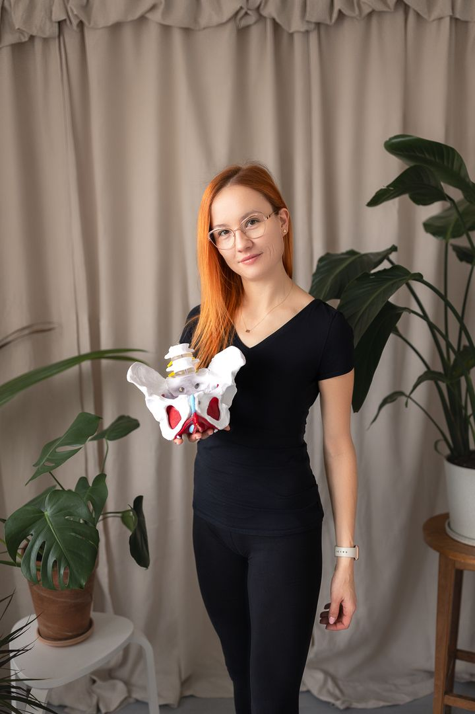

---
# Feel free to add content and custom Front Matter to this file.
# To modify the layout, see https://jekyllrb.com/docs/themes/#overriding-theme-defaults

layout: home
---

<section>
  <div>
    <h2>Witam na mojej stronie!</h2>

    <p>Nazywam się Gosia Radzymińska.</p>

    <p>
      Jestem magistrem fizjoterapii oraz certyfikowaną fizjoterapeutką
      uroginekologiczną. Ukończyłam również studia licencjackie na kierunku
      wychowanie fizyczne na krakowskiej Akademii Wychowania Fizycznego.
    </p>

    <p>
      <strong
        >Specjalizuję się w holistycznej pracy z kobietami na różnych etapach
        macierzyństwa - od przygotowania do porodu, przez wsparcie w okresie
        połogu, aż po pomoc w powrocie do pełni formy. Jako terapeutka
        uroginekologiczna zajmuję się problemami takimi jak nietrzymanie moczu,
        bolesne miesiączkowanie, dysfunkcje seksualne oraz obniżenia narządu
        rodnego. Pomagam kobietom odzyskać komfort życia i pewność
        siebie.</strong
      >
    </p>

    <p>
      Pracuję również z mężczyznami, oferując terapię urologiczną w przypadkach
      takich jak zespoły bólowe miednicy mniejszej, nietrzymanie moczu, stan po
      radykalnej prostatektomii oraz zaburzenia erekcji.
    </p>

    <p>
      <strong
        >Moja misja to edukacja i uświadamianie o kluczowej roli zdrowego,
        aktywnego stylu życia w zachowaniu dobrej kondycji fizycznej i
        psychicznej.</strong
      >
      Prywatnie jestem pasjonatką sportów zimowych oraz jazdy konnej. Jako żona
      i mama dwójki energicznych maluchów doskonale rozumiem wyzwania
      codzienności, dlatego zawsze podchodzę do każdego pacjenta i pacjentki z
      empatią, cierpliwością i pełnym zaangażowaniem.
    </p>

    <p>
      Zapraszam do kontaktu - razem możemy zadbać o Twoje zdrowie, komfort i
      lepsze samopoczucie!
    </p>

    
  </div>
</section>
